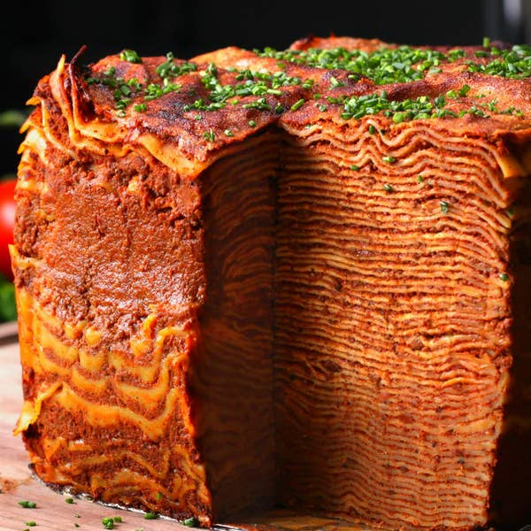

Lasagna

Description
This incredible 100 layer lasagna is sure to get
your guests' attention when it comes out from the kitchen.
It's perfect for when you really want a dinner that's nearly
as tall as you are.
Ingredients
Bechamel Sauce
- 1 stick butter
- 1/2 cup flour
- 8 cups milk
- 2 teaspoons salt
- 1 teaspoon black pepper
- 1/2 teaspoon nutmeg
Meat Sauce
- 1/2 cup olive oil
- 2 cups onion, finely chopped
- 2 cups carrot, finely chopped
- 2 cups celery, finely chopped
- 6 lbs ground beef, 80% lean 20% fat
- 115 oz tomato sauce, 4 cans
- 1/2 cup tomato paste
- 4 cups chicken stock
- 1 tablespoon salt
- 1/2 tablespoon black pepper
- 110 no-boil flat lasagna noodles
- 2 cups grated parmesan cheese
- 1 cup fresh chives, finely chopped
Steps
- Lay down about 6 feet (1.8 meters) of tinfoil on a flat surface. Place place 4 clusters of 2 lasagna noodles towards the left half of the foil sheet, leaving about a ½-inch (1 cm) gap in between each cluster.
- Fold the right half of foil over the noodles, pressing flat. To help you see where the noodles are, run your finger along the edges of the noodles to create a rough outline in the foil.
- Fold the top and bottom flaps of foil over, creasing and pressing flat.
- Flip the foil sheet onto the table so that it’s now standing, then arrange into a square box, using the 4 groups of noodles as a visual guide. Fold and crease over any excess foil to join the ends together, then set aside.
- In a large pot, melt the butter over medium heat.
- Whisk in the flour, cooking until the mixture reaches a light golden color.
- Slowly drizzle in the milk and bring to a boil, whisking constantly until smooth. Mix in salt, pepper, and nutmeg. Bring to a boil.
- Transfer the béchamel to a large bowl and press plastic wrap onto the surface of the sauce to prevent a skin from forming. Set aside.
- Heat oil in a very large pot over high heat. Once the oil begins to shimmer, add the onions, carrots, and celery and cook until the vegetables have started to sweat but aren’t browning.
- Add in the ground beef and use a wooden spoon or spatula to break up the meat into small pieces.
- Cook the beef, stirring occasionally, until half of the liquid has evaporated.
- Add in the tomato sauce, tomato paste, chicken stock, salt, and pepper, stirring to combine evenly and breaking up any last lumps.
- Turn down the heat to low, and simmer, covered, for about 2 hours.
- Preheat oven to 350°F (180°C).
- To assemble, line a greased 9x9-inch (23x23-cm) square baking pan with 2 sheets of foil that extend over the sides.
- Spread a thin layer of béchamel on the lined baking pan and top with 2 lasagna noodles. Spread a thin layer of meat sauce evenly across the noodles, followed by a thin layer of béchamel. Repeat the layering process, following the order of: 2 noodles, meat sauce, and béchamel. Alternate the direction of the lasagna sheets after every layer.
- After 50 layers, place the foil box over the lasagna, helping it stay upright and stable.
- Continue with the layering process until the 99th layer.
- Sprinkle Parmesan on top, then cover the whole lasagna with foil.
- Bake for about 1½ hours, uncovering the foil halfway, until the top is a deep golden brown.
- Cool for at least 2 hours, then carefully lift out the lasagna with the foil sleeves onto a large cutting board.
- Peel away the foil walls, then sprinkle the top of the lasagna generously with chives.
- Cut and serve.
- Enjoy!